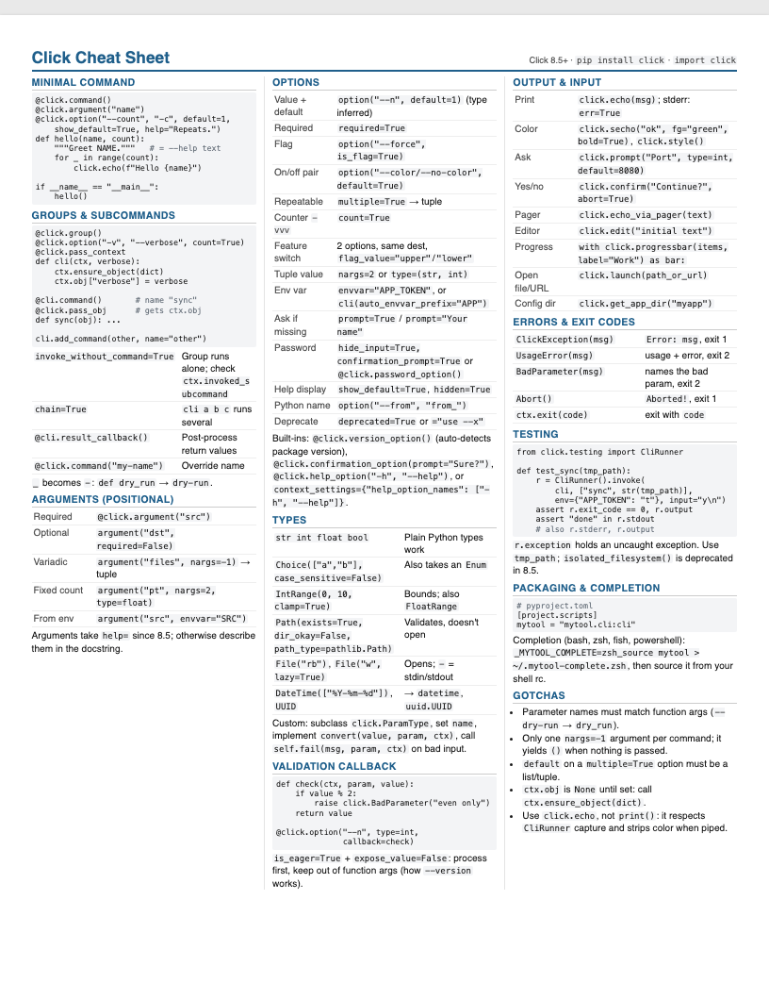
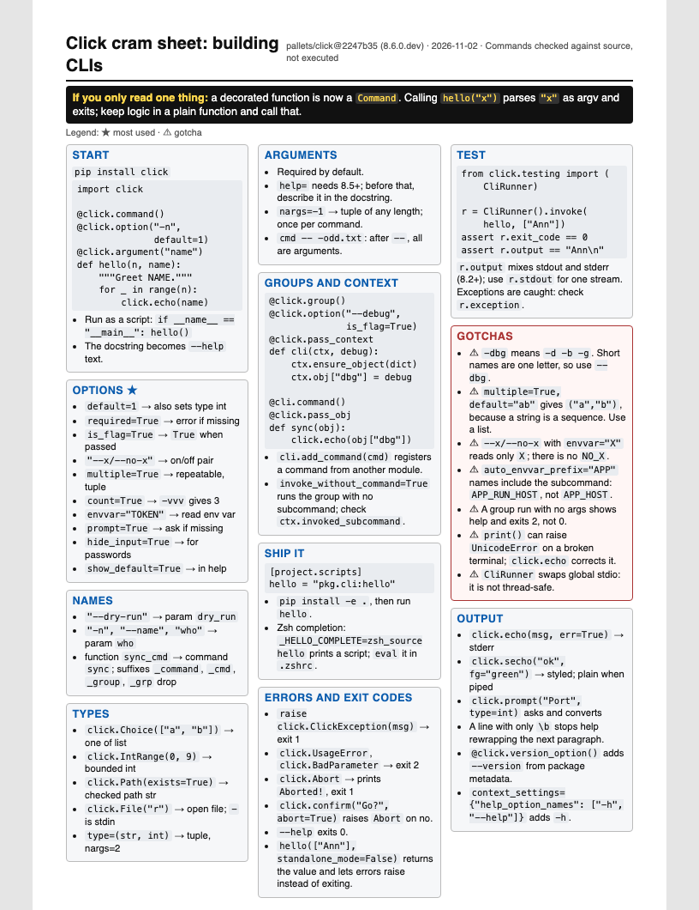

The skill makes long docs about half the length and easier to scan. On cheat sheets, the gain is different: readable type, a priority line, and a list of what was cut. Plain AI packs in more by shrinking the font. Neither version was error-free.
A fresh test on pallets/click @2247b35, a repo the skill had never seen. Prompt: "Make me a one-page cheat sheet for building CLIs with it, as Markdown and print-ready HTML." Both rendered to exactly one US Letter page.


| Measure | Plain AI | clean-docs |
|---|---|---|
| Pages (US Letter, headless Chrome) | 1 | 1 |
| Words | 693 | 534 |
| Smallest text size | 6.3pt (code blocks) | 8pt code, 8.5pt body |
| "If you only read one thing" line | No | Yes |
| Gotchas box items | 5 | 7 |
| Tells you what was left out | No | 8 topics, each with a reason |
| Reader questions answered (5) | 5/5 | 5/5 |
| Median words read before the answer | 176 | 198 |
| Factual errors found in a spot check | None found (not fully audited) | 2 found by running (see below) |
Same prompt on httpie/cli: "docs a new developer would use to understand and use this project." This is the top of each doc.
# HTTPie CLI — Developer Guide HTTPie (`http` / `https`) is a command-line HTTP client for working with APIs. You type requests in a short, readable syntax, and responses come back formatted and colorized. This guide is for developers who are new to … - **Version in this checkout:** 3.2.4 … - **Language:** Python 3 … - **License:** BSD - **Built on:** `requests` … --- ## 1. Quick start ### Run from source
# Start here: HTTPie CLI
HTTPie is a command-line HTTP client for talking to APIs: `http` and `https` send a request built from short `key=value` arguments and print a colored, formatted response.
git clone https://github.com/httpie/cli.git && cd cli
python3 -m venv venv && ./venv/bin/pip install -e '.[dev]'
./venv/bin/http --offline pie.dev/post name=Ada age:=36
POST /post HTTP/1.1
Content-Type: application/json
…
{"name": "Ada", "age": 36}
key=value| Behavior | Plain AI | clean-docs |
|---|---|---|
| Length | 1,800–2,500 words per doc | 810–1,000, set by a budget picked up front |
| Opening | Title, intro, metadata bullets, then content | What it is in one sentence, then a runnable example |
| Structure | 20–29 numbered headers per doc | 6–8 headers, one per real section |
| AI tells | 6–21 em dashes per doc, bold labels, horizontal rules | None flagged by the linter |
| Running the code | Not done | Installed and ran it when possible; found 4 gotchas the plain docs lack |
| Cheat sheet that doesn't fit | Shrinks the font | Cuts low-priority content and lists the cuts |
| Accuracy | Not audited line by line | Better when it can run code; 1 wrong claim when it couldn't |
Opus 5.5 without the skill writes correct, organized docs. Its cheat sheets were good in every test: one page, sensible sections, and on Click it found answers slightly sooner because it covered more. The skill doesn't turn bad docs into good ones. It turns long, generic docs into short ones aimed at one reader, and it prevents the tiny-font cheat sheet.